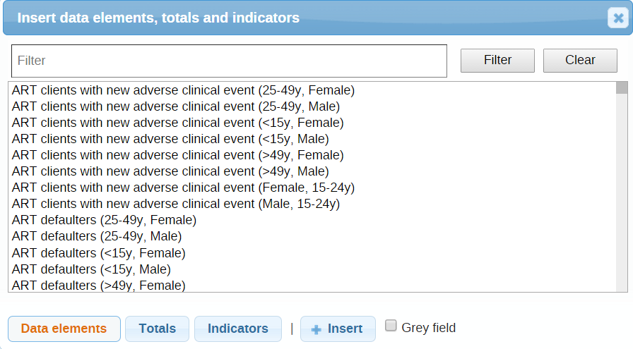

To add a custom form to a data set:
Click Apps > Maintenance > Data set.
In the list, find the data set you want to add a custom form to.
Click the options menu and select Design daa entry form.
Click Save.
first locate your data set in the Data set Management window and click on the Design data entry form from the context menu.
First provide a Name for the form. There are a few important buttons in the Editor that you must pay special attention to. The icon with four outward arrows is the full screen mode on/off button, which can be very useful. The there is a Source button that shows the HTML code for your form.
If you already have the HTML for your form then you should start by pasting it in here. Click on Source again to go back to preview/non-HTML mode. A blue icon under the editor window, "Insert data elements," allows you to add data elements to the form.
All the input fields need to have a link to a data element or indicator. To add new data elements to the form, double-click them from the data element/indicator box as shown below. You can also select a data element/indicator and press the "+Insert" button. You can switch between either data elements, totals for or indicators by pressing the respective buttons.
|  |
You can save by clicking on the Save button, and this will not close the window. It is recommended to save often to ensure you do not loose your work.
When you are done or want to test your form in data entry click on <Save and close>.